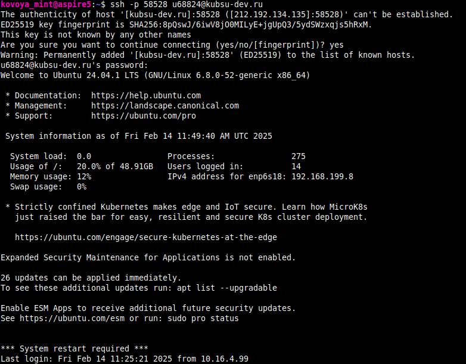
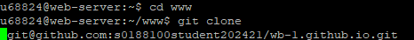
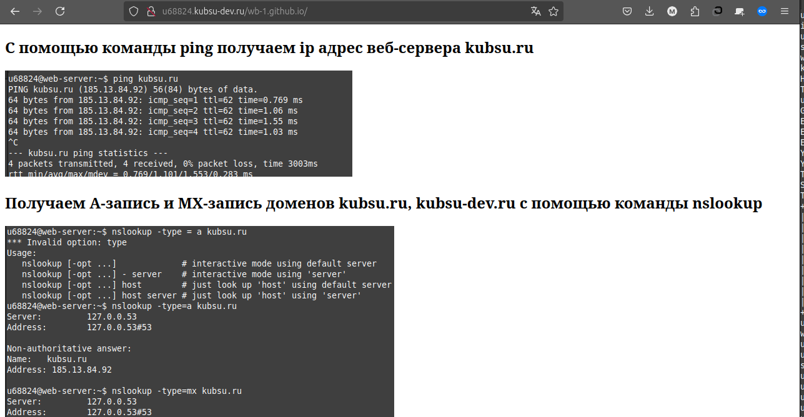
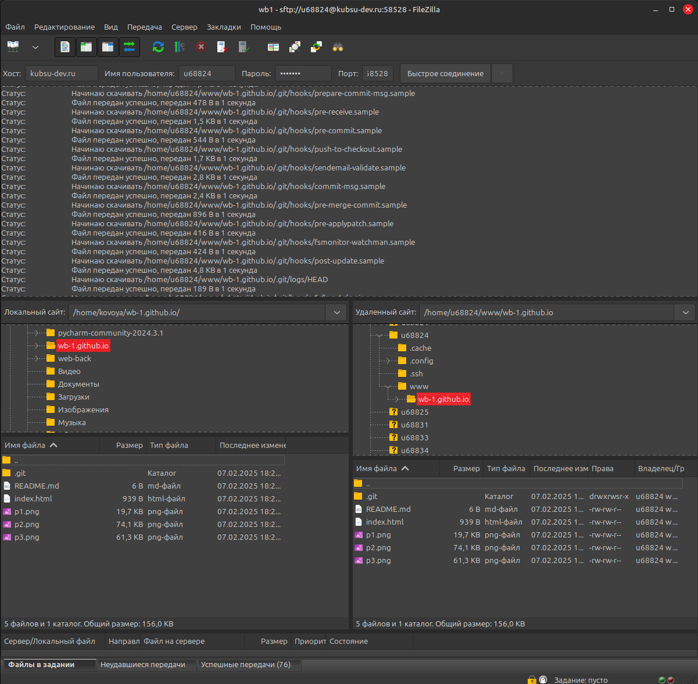
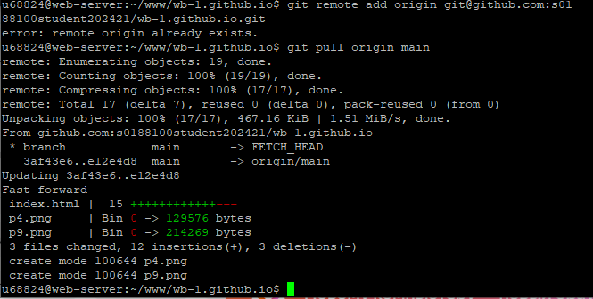

0. С помощью утилиты ssh подключаемся к учебному серверу

1. С помощью команды ping получаем ip адрес веб-сервера kubsu.ru

2. Получаем А-запись и MX-запись доменов kubsu.ru, kubsu-dev.ru с помощью команды nslookup

3. Получаем дату регистрации домена kubsu.ru 2020-02-12T15:55:06Z с помощью команды whois

4. Клонируем репозиторий с помощью команды git clone в папку www как указано в задании/

4 . Страница открывается по адресу http://ваш_логин.kubsu-
dev.ru/каталог_задания_1/

5 .С помощью программы filezilla соединилась с учебным сервером и скопировала на локальный компьютер файлы задания в директории wb1.github.io/

6. Добавив новые скриншоты в репозиторий, добавляем изменения на сервер с помощью команды git pull
